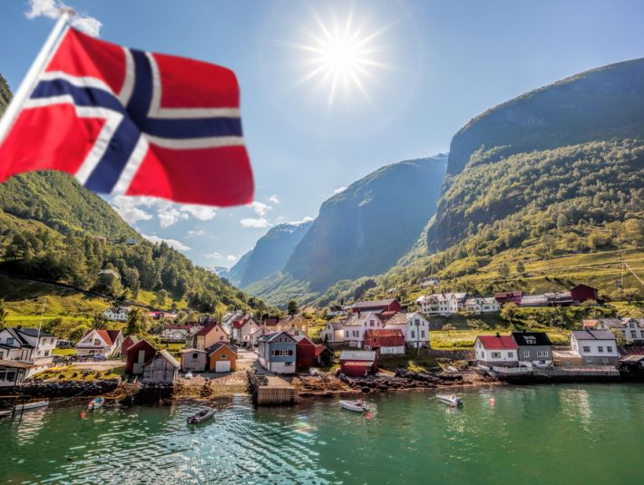
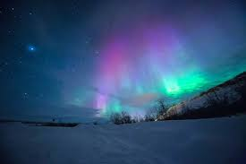
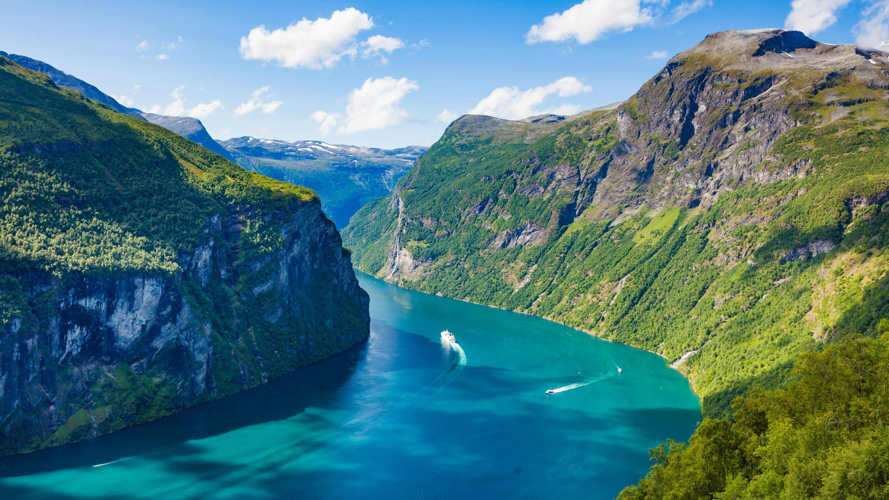

Sua proxima viagem
Conheça a Noruega
Para os amantes de paisagem
Descubra 3 destinos imperdíveis da Noruega
Conheça a Noruega, um país incrível com paisagens de tirar o fôlego. A Noruega é um país nórdico que faz parte da península escandinava. O país é conhecido por seus fiordes, montanhas e lagos. A Noruega é um dos países mais ricos do mundo e tem uma das melhores qualidades de vida. O país é conhecido por sua natureza intocada e pela sua cultura rica. A Noruega é um país incrível para se visitar e tem muito a oferecer. Venha conhecer a Noruega e se encantar com suas paisagens deslumbrantes.
1.Aurora Boreal
Não podemos falar da Noruega sem antes falar da Aurora Boreal. A Aurora Boreal é um fenômeno natural que ocorre no céu do hemisfério norte. A Aurora Boreal é um espetáculo de luzes coloridas que dançam no céu. A Noruega é um dos melhores lugares do mundo para ver a Aurora Boreal. A Aurora Boreal é um fenômeno incrível e único que vale a pena ser visto. Venha para a Noruega e se encante com a Aurora Boreal.
2.Fiordes
Os fiordes da Noruega são vales glaciais que se estendem entre altas montanhas rochosas. São um dos principais símbolos naturais do país e uma das atrações turísticas mais procuradas. Os fiordes da Noruega são paisagens deslumbrantes que impressionam pela sua beleza e grandiosidade. Venha conhecer os fiordes da Noruega e se encantar com suas paisagens incríveis.
3.Lago Mjosa
O lago MjOsa é o maior lago da Noruega, localizado no sudeste do país, entre os condados de Innlandet e Viken. O lago é um dos principais destinos turísticos da Noruega e oferece diversas atividades ao ar livre, como passeios de barco, pesca e caminhadas. O lago MjOsa é um lugar incrível para relaxar e apreciar a natureza. Venha conhecer o lago MjOsa e se encantar com suas paisagens deslumbrantes.